Kunstmatige intelligentie
Contents
Kunstmatige intelligentie#
Naive Bayes classificatie en genetische algoritmen
Tekstclassificatie#
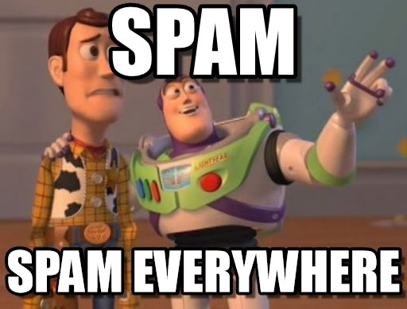
Spam of geen spam? Welk label kan je op een bericht plakken, spam of inbox?
Welke auteur?#
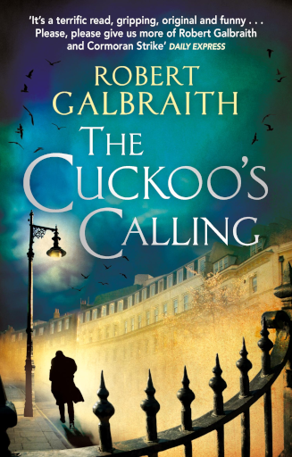
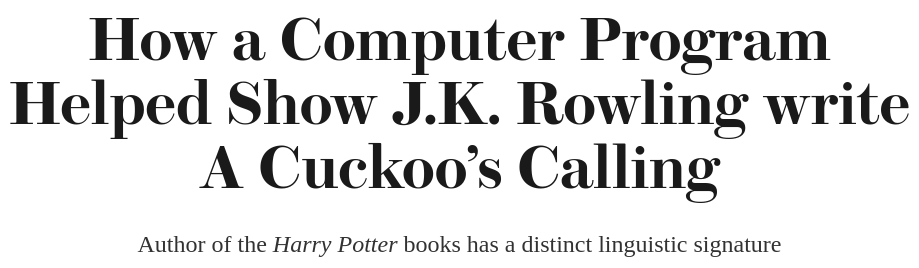
Welke mogelijke auteur is de schrijver van een onbekende tekst? The Cuckoo’s Calling van Robert Galbraith bleek geschreven door J.K. Rowling!
Kansen!#
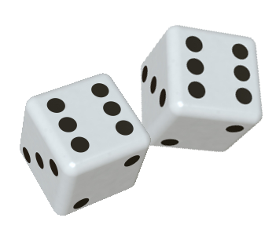
Dit wordt een verhaal over kansen! De centrale vraag is, gegeven teksten die eerder zijn gezien (en waar de auteur, of het label van bekend is), wat kunnen we zeggen over de waarschijnlijkheid dat een auteur de schrijver is van een tekst die niet eerder is gezien?
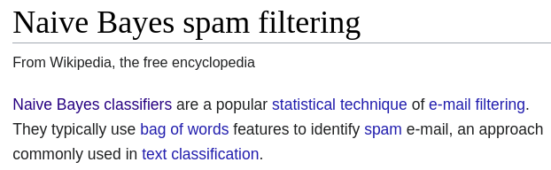
Modellen#
Een model is een vereenvoudigde weergave van een werkelijkheid
{
"love": 50
"spell": 8
"thou": 42
}
Woordfrequentie is een maat voor de “stijl” van een auteur
Het is niet het enige dat stijl kenmerkt, zo zijn meer kenmerken te bedenken (bijvoorbeeld het gebruik van punctuatie). Het is een vereenvoudigd maar informatief genoeg model van wat een auteur van andere auteurs onderscheidt. Wat het ene model van het andere onderscheid worden vaak “features” genoemd, in dit geval de tellingen van woordgebruik.
Modellen vergelijken?#
Tekst van Robert Galbraith
{ # Robert Galbraith, geen "potter" ...
"love": 50
"spell": 8
"thou": 42
}
Tekst van J.K. Rowling
{ # J.K. Rowling, geen "thou" ...
"love": 25
"spell": 275
"potter": 700
}
Nieuwe tekst, auteur onbekend
{ # Onbekend auteur...
"love": 3
"potter": 2
"thou": 1
"spam": 4
}
Hoe zou je de “gelijkheid” van de nieuwe tekst met de twee bekende modellen kunnen scoren?
Naive Bayes classification#
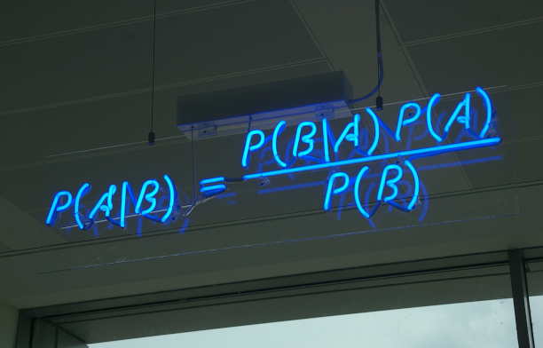
Let niet teveel op de vergelijking, we gaan deze vereenvoudigd gebruiken!
Naïviteit#
Aanname: elk woord in een zin is onafhankelijk van de ander
this party was fun
of
party fun was this
maakt niet uit!
Dat de volgorde van woorden niet uitmaakt is een naïeve aanname, maar wel handig voor ons probleem.
Stappen#
Normaliseer de modellen van de bekende auteurs
{ # Robert Galbraith
"love": 0.5 # 50
"spell": 0.08 # 8
"thou": 0.42 # 42
}
{ # J.K. Rowling
"love": 0.025 # 25
"spell": 0.275 # 275
"potter": 0.7 # 700
}
Model scores#
Bereken een score per model voor de onbekende tekst
{ # Robert Galbraith
"love": 0.5
"spell": 0.08
"thou": 0.42
}
{ # Onbekend
"love": 3
"potter": 2
"thou": 1
"spam": 4
}
De kans dat deze woorden in deze aantallen samen voorkomen is voor “love” (3x) en “thou” (1x)
Wat te kiezen voor de ontbrekende woorden “potter” (2x) en “spam (4x)”?
Ontbrekende waarden#
Gebruik 0 als waarde?
Gebruik 1 als waarde?
Een waarde 0 is in in ieder geval niet nuttig. Maar waarom is het vooral geen goed idee om 1 te gebruiken?
Oplossing#
Gebruik de helft van de kleinste waarde voor beide modellen
{ # Robert Galbraith
"love": 0.5
"spell": 0.08
"thou": 0.42
}
{ # J.K. Rowling
"love": 0.025
"spell": 0.275
"potter": 0.7
}
De score voor Robert Galbraith:
De kleinste waarde is \(0.025\) (“love”) en deze waarde gedeeld door twee is ongeveer gelijk aan \(0.012\). Dit is niet de enige manier om met 0-waarden om te gaan, een andere veelgebruikte techniek is Laplace smoothing.
De uikomst \(1.57\text{e-}13\) is geschreven in een wetenschappelijke notatie en staat voor voor \(1.57 \cdot 10^{-13}\). Dit zijn héél veel getallen achter de komma, we kunnen hier een andere vorm gebruiken!
Logaritme#
Gebruik de logaritme van de waarden
van
naar
Python?#
from math import log2
galbraith = 3 * log2(0.5) + log2(0.42) + 6 * log2(0.012)
galbraith
-42.53646947064155
{ # J.K. Rowling
"love": 0.025
"spell": 0.275
"potter": 0.7
}
{ # Onbekend
"love": 3
"potter": 2
"thou": 1
"spam": 4
}
De score voor J.K. Rowling
rowling = 3 * log2(0.025) + 2 * log2(0.7) + 5 * log2(0.012)
rowling
-48.89903955002626
De winnaar#
Het model met de beste (hoogste) score!
Robert Galbraith: −42.53, de (veel?) betere match
J.K. Rowling: −48.9
Genetische algoritmen#
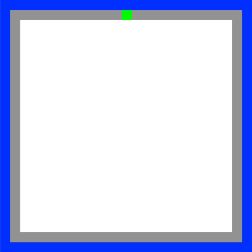
De cirkel is nu rond, je bent begonnen met Picobot en kan er nu mee eindigen!
Picobot#
Het idee:
Implementeer Picobot in Python
Train Python om succesvolle Picobot programma’s te schrijven!
Regels#

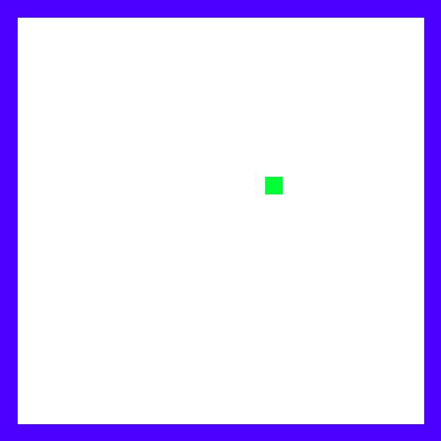
0 xxxx -> N 0
0 Nxxx -> W 0
0 NxWx -> S 0
0 xxWx -> S 0
0 xxWS -> E 0
0 xxxS -> E 0
0 xExS -> N 0
0 xExx -> N 0
0 NExx -> S 1
1 xxxx -> S 1
1 Nxxx -> E 1
1 NxWx -> E 1
1 xxWx -> N 1
1 xxWS -> N 1
1 xxxS -> W 1
1 xExS -> W 1
1 xExx -> S 1
1 NExx -> W 0
Huidige staat |
Omgeving |
Stap |
Richting |
Nieuwe staat |
|---|---|---|---|---|
|
|
|
|
|
+++++++++++++++++++++++++ Wall: +
+oooooPooooooooooooooooo+ Visited: o
+o o o+ Picobot: P
+o o o+
+o o o+
+o o o+
+o o o+
+o o o+
+o o o+
+o o o+
+o o+
+o o+
+o o+
+o o+
+o o+
+o o+
+o o+
+o o+
+o o+
+o o+
+o o+
+o o+
+o o+
+ooooooooooooooooooooooo+
+++++++++++++++++++++++++
Klassen#
Een Picobot programma (een verzameling regels)
class Program:
...
Welk type zal self.rules zijn?
1 NExx -> W 0
self.rules[(1, "NEXX")] = ("W", 0)
Een dictionary is een geschikt type waar de “huidige staat” en “omgeving” de sleutel is en richting en nieuwe staat als waarde, beide als tuples. De regel staat vast, en om deze reden is een tuple een geschikt type om een onveranderlijke verzameling van waarden mee vast te leggen (een tuple is immutable).
Een dictionary vereist dat een sleutel overanderlijk is en zal om deze reden lists niet als sleutel accepteren (want deze zijn mutable), maar tuples wél!
Een Picobot wereld (de ruimte en de positie van Picobot)
class World:
...
Welk type zal self.room zijn?
Een list of lists voor een 2D array!
Muur:
+Bezocht:
oPicobot:
P
De evolutie van Picobot#
Een voorbeeld van een een genetisch algoritme voor het optimaliseren van
moeilijk te beschrijven functies
met behulp van eenvoudig op te delen oplossingen
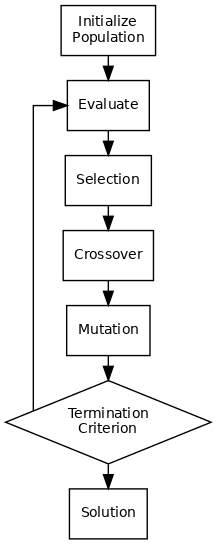
Evolutie#
Begin met een populatie van ~200 random Picobot programma’s
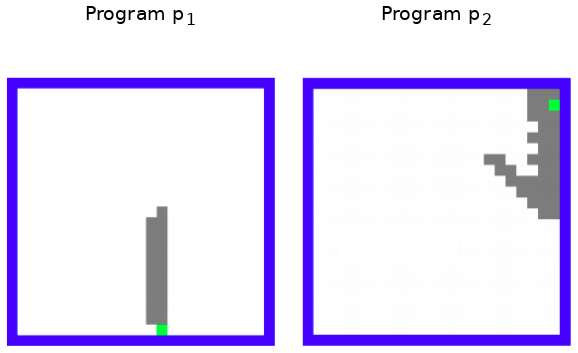
Fitness#
Bepaal per Picobot programma de dekking als waarde tussen 0 en 1
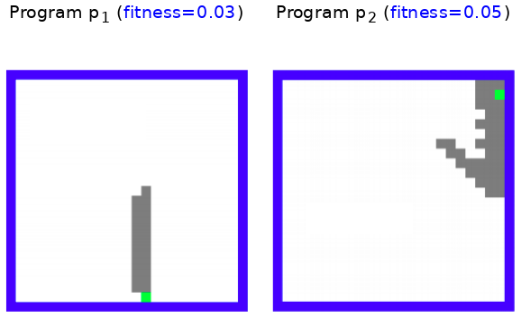
Combineren#
Paar (crossover) en muteer de meest fitte 10-20% programma’s en begin weer met ~200 random Picobot programma’s
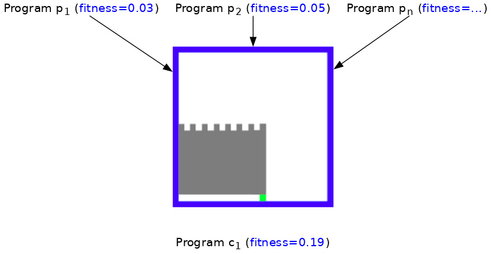
Herhalen#
Herhaal dit “survival of the fittest” proces voor meerdere generaties tot een meest optimale fit is gevonden!